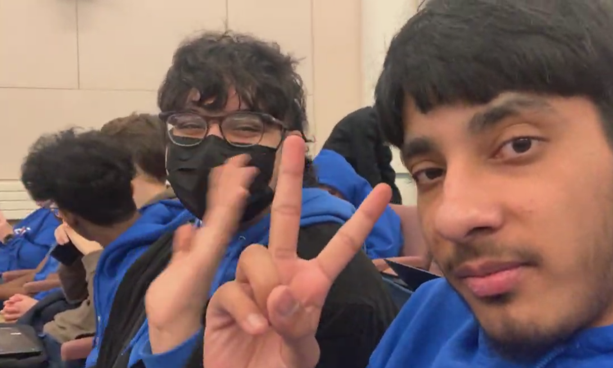
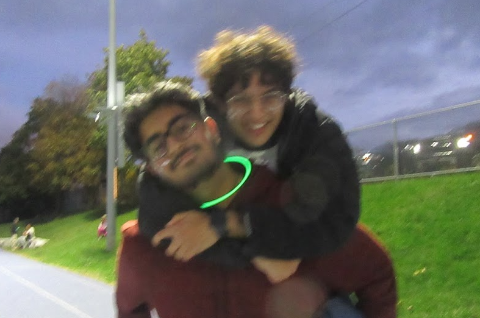
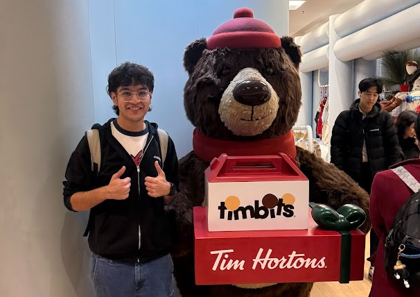
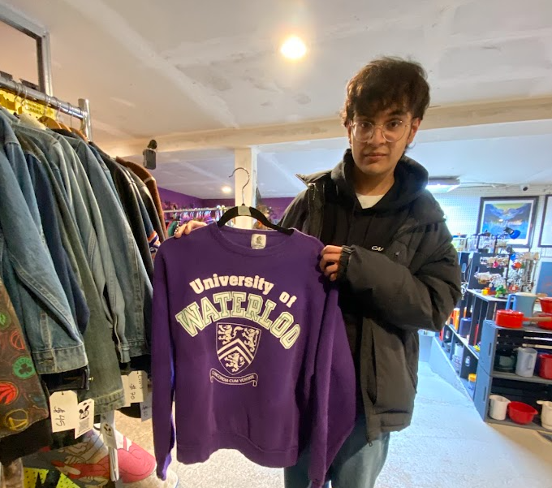
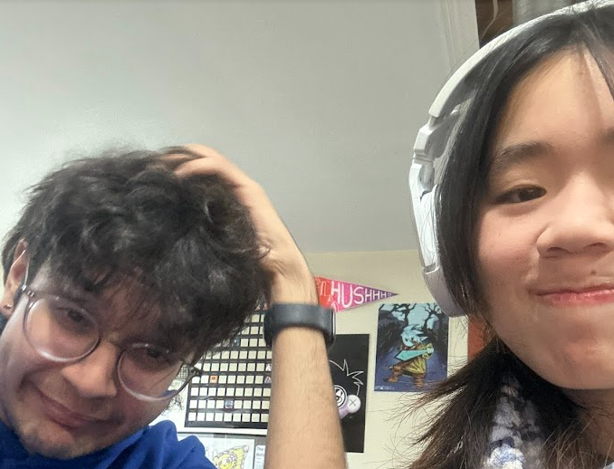
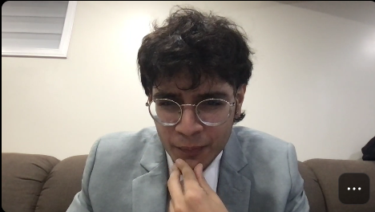
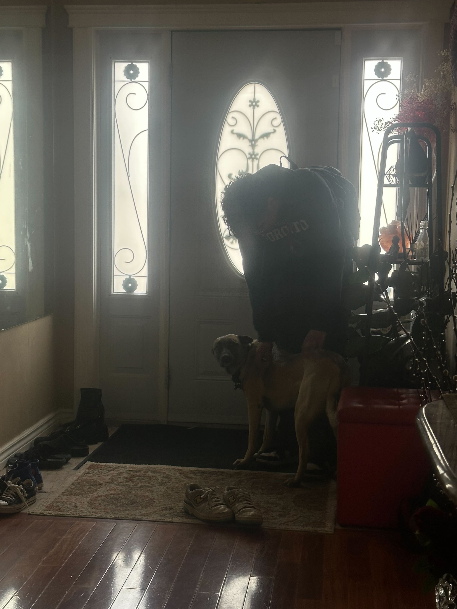
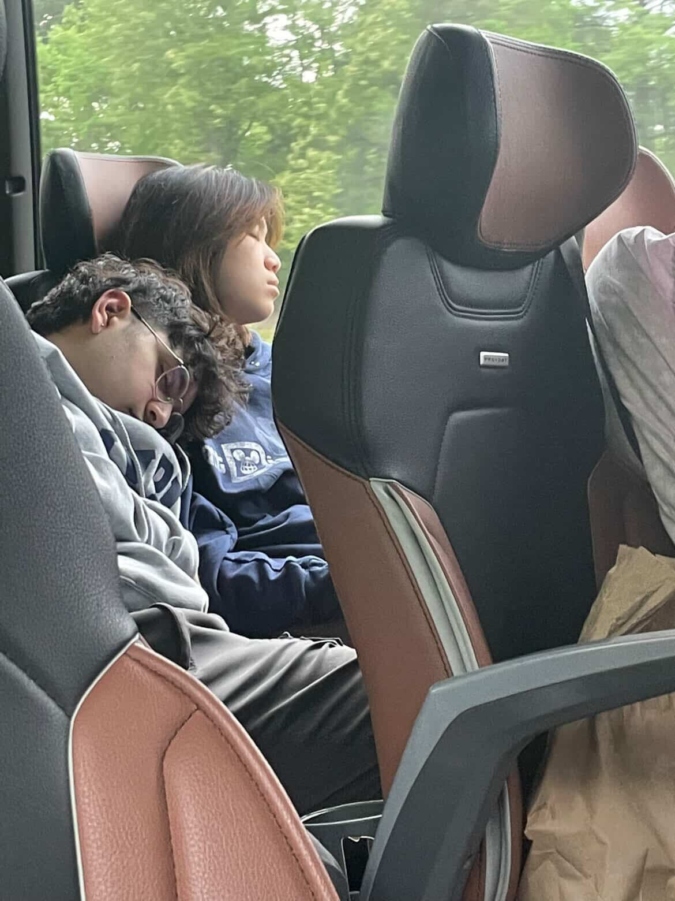

Your Hair
I keep bringing this up but when I saw you at the Kickoff. I literally could NOT stop admiring your majestic mullet. It was too cool. You were too cool. You're still really cool. Now I have the privledge to admire your hair everyday, and maybe we can match with ghost roots one day. Pls.
Your Smile
I don't know why you kept wearing a mask so much because your smile is so beautiful. Even if you got me sick, it would be worth it because I would get to see your smile, and you know what it makes me feel better. We were at rainbow prom when you came up to that one online teacher you had. She didn't immediately recognize you but she did remember your smile and I thought it was the cutest thing ever. Keep smiling because it makes so many people happy.
Cheering me up
You always know how to cheer me up no matter the circumstance. I remember when I was crashing out from my Chemistry Culminating and you bought me a cupcake. Super unexpected and I was kind of confused but you said that I loved cupcakes, which I do but I don't remembering explicity saying that to you. Nevertheless I really appreciated that gesture and it warms my heart when I think about it. What did I ever do to deserve you?
How you treat people

What made me initially like you is how you talk about people. You never judge and form opinions without knowing a person fully. I don't think I have heard you shit talk anyone (unless they did a really bad thing). You don't gossip, which is actually really refreshing. Anyways, the world would be better or atleast high school would be more tolerable if people were more like you.
Your fits
Especially your Carhart Khakis... I love your jeans and pants so much your style is so cool! I think you can pull off pretty much anything even your "what the sigma" shirt looks fashionable. Let's go to the mall and pick out outfits together. I can pay :) maybe matching sweats???
Your Design Skills
I know you don't want to be the media guy but I really envy your skills and the ability to create the coolest videos and games! It's something I wanted since I got to know you and I really do want to learn. Let's find a time to teach me, I want to be a content creator! Maybe work on paper shredder in the meantime?
Your notes

You have such good hand writing it makes me jealous. I love the handwritten notes you've given me throughout our relationship because you make these silly jokes and references that I only can understand. My hand writing is pretty bad and you should know from the notebook and the notes I've written to you, so here I am making a website. Hope it still gives off the same effect.
Attention to Detail
Everything you do is extremley thoughout and you execute it super efficiently. Your projects and ideas have 100% full effort put in to them and I really admire that about you. You don't cut out on quality. Looking at your projects during school always impresses me and even going to your house, I looked at all the amazing things you created like my scarf! I wish I could wear it more but I keep forgetting it before I leave! It's my favourite thing ever.
Katara likes you
It was really a miracle when Katara immediately came up to you to cuddle. It's like she already met you and just wanted more pets. Well now she likes you way way way than she likes me and cries whenever she sees you. It's like you have good vibes and I think that's also another reason that my sister likes you aswell. Because our dog likes you, so I love you!
I feel so loved
These have been the best months of my life and I can't believe it was all because of this silly hackathon called Scrapyard. I will never forget that night, even though I was super sleep deprived and maybe you were keeping me up IDK. I learned a lot about you in that single night and it made me realized that I had feelings for you. You were very charming and the whole time in Houston I was terrified to talk to you even when everyone knew that we had feelings for eachother. Lucky enough, we passed by a Dairy Queen on the way back.